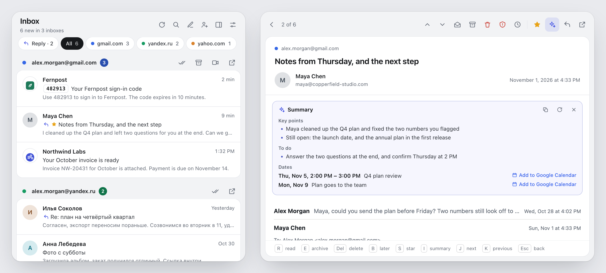

Every inbox you’re signed in to, in one panel.
Mail Deck sits on the Chrome toolbar and brings together the unread mail of Gmail, Yahoo Mail, AOL, Proton Mail, Yandex Mail and Mail.ru. Read, archive, delete or put mail off till later without opening a tab. It works through the session your browser already has, so it never needs your password. And it is quick at all of it.

Works with your mail
- Gmail
- Yahoo Mail
- AOL Mail
- Proton Mail
- Yandex Mail
- Mail.ru
Gmail works as soon as Mail Deck is installed. For the others, sign in on the service’s own site as usual, then turn it on in Settings → Other mail. Chrome asks you to allow that service’s sites, and turning it off takes the permission back. There is no password, app password or account of ours to set up: Mail Deck reads each one with the session your browser already has, the way it reads Gmail.
Not everything is the same everywhere. Proton mail opens on Proton’s site, because it is end-to-end encrypted; the panel shows its sender, subject and time. Mail from Yandex Mail and Mail.ru cannot be archived from the panel. Search, stars, Google Meet, labels and the Primary tab are Gmail’s. The other services have no public interface for this, so Mail Deck follows their own web apps, and a change on their side can stop one until Mail Deck is updated.
Fast, all the way through
-
Every inbox at once
All your mailboxes are checked side by side, Gmail and the other services alike, so the count is fresh as soon as the slowest one answers. A mailbox that hangs no longer holds up the rest.
-
Messages open on the click
Point at a Gmail message and it is fetched before you click. The last ones you read, from any service, stay ready for the rest of the session.
-
The panel opens ready
It shows what the last check found, and Gmail’s stars and the mail past the first twenty are remembered for a few minutes, so opening the panel again asks no mail service anything.
-
Actions never get lost
Archive and close the panel straight away: the action still reaches the mail service once its five-second Undo is over, and the count drops at once.
A closer look


What it does
-
Each mailbox at a glance
Every mailbox you’re signed in to shows with a colour and an unread count, and a Google account with its own picture too. Pick a chip to see one inbox only.
-
Read in place
A Gmail conversation opens whole in the panel, attachments included. Mail from Yahoo, AOL, Yandex and Mail.ru opens there too; Proton’s opens on Proton’s site.
-
Undo for five seconds
Archived or deleted the wrong one? Press Undo in the notice, or Z.
-
Reply and star
Reply opens a compose window on the service the message came from; Gmail’s comes already addressed. Star a Gmail message without leaving the panel.
-
Labels, not just the inbox
Choose which Gmail labels to watch, separately for each account, or only the Primary tab.
-
Search every Gmail inbox
One search runs in all your Google accounts at once.
-
Remind me later
Put a message away until this evening, tomorrow or next week. It comes back with a notification.
-
Your order, your side panel
Drag the inboxes into your order, keep the deck open beside the page, open it with Alt+Shift+M.
-
Notifications and sound
A desktop notice and an optional sound for new mail, with quiet hours, quiet inboxes and rules for senders.
One key per action
- RMark as read
- EArchive
- DelDelete
- !Report spam
- SStar
- ZUndo
- BRemind me later
- /Search
- OOpen in the web app
- JNext message
The keys go by position, so they work with any keyboard layout. Star and search are for Gmail; archive works everywhere but Yandex Mail and Mail.ru.
Nothing in between
Mail Deck has no servers and no analytics. It talks only to Google and to the mail services you turn on, each with the session your browser already has, and never sees your password.